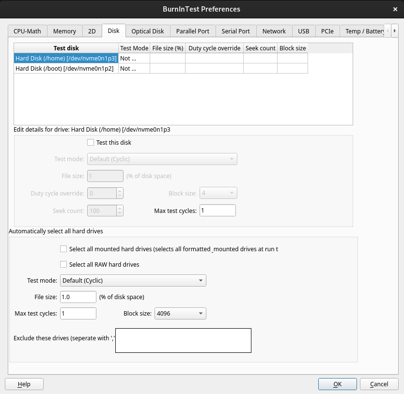

Disk Preferences |
Top Previous Next |
|

Partitioned drives must be mounted before BurnInTest can test them, they also need to be of partition type ext2, ext3, reiserfs, xfs, vfat or ntfs. Due to limited NTFS support in some Linux distributions you may need to use a non-default type (eg ntfs-3g) to mount NTFS drives with read + write permissions before you can test them.
Adding a disk To add a disk for testing, select it in the list of available disks and then click the “Test this drive” checkbox. To test a shared network drive, the drives needs to have a drive letter mapped to it. Only those drives detected by the operating system as displayed in the drop down list.
The following settings can be configured differently for each drive: Test mode, File size. Duty cycle overide, Block size, Seek count and Max test cycles.
Removing a disk To remove a disk from the list, select it in the list of available disks and uncheck the “Test this drive” checkbox. The “Test Mode” field in the list will change to “Not Testing”.
Up to twenty drives can be selected for simultaneous testing. Note: The simultaneous testing of two partitions on the same physical hard drive will result in a lot of seeking between partitions and slow down the test significantly.
Editing a disk To edit the values for a disk, select it in the list of disks and if the “Test this drive” checkbox has been checked then the other options will become available. Any changes made to the current values will be automatically reflected in the list.
Edit details for drive Test mode The test mode patterns that can be selected are explained in the section Hard Disk and Floppy Disk Test.
File size The user can select the test file size and test pattern that is used with the disk test. The size of the file is equal to a certain percentage of the disks capacity. The default file size is 1.0% of the disk size. So if a disk had a total capacity of 40GB then the default size of each file would be 400MB. Setting a smaller percentage results in more files being created on the disk and the read / verify cycle occurring more quickly.
Duty cycle override To use the general disk drive Duty cycle for each disk just set the Duty Cycle override value to blank (no value), otherwise set the required value per disk.
Seek count For test modes that perform seeking to different positions on the disk drive (eg. Random data with random seeking), the seek count specifies the number of seeks for a particular iteration (eg. After Random data with random seeking has created 100 test files, the Seek count specifies the number of times a seek should occur between blocks within these 100 files).
Automatically select all hard drives If you would like to test all the detected disks over multiple systems (using the same configuration file) you can use the "Select all mounted hard drives" option to test all the detected mounted hard drives and "Select all RAW disks" to test all the detected RAW drives. The same test mode and file pattern will be used for all the disk tests in this case.
Exclude these drives Any mount point (eg /) or device name for RAW devices (/dev/sda) will be excluded from the test when the "Automatically select all" option is used. Each entry in this list should be separated by a ',' character.
RAW (un-partitioned) Disk Testing When a Raw (un-partitioned) disk is detected it will be displayed in the drive columns as "Raw Disk [device name]". This will allow the device to be selected for testing and write directly to the disk, bypassing the file system. Be aware that this test is designed to be run on un-partitioned devices and running the test on a partitioned device can result in corruption of the partition and data stored on the device.
|